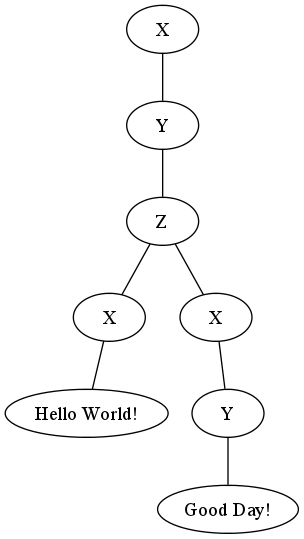

Todo
Using only a pencil and the left half of a paper, construct a random, non-trivial well-formed XML element with tag names x, y, z and sub(...sub)elements as follows: Write an x/y/z start-tag such as <x>, pronouncing it “angle, x, angle”; leave plenty of space and write, vertically below, the matching end-tag </x>, pronouncing it “angle, slash, x, angle” (with practice, you can also pronounce the ‘x-colored brackets’ <x> as “start-x” and </x> as “end-x”). Then fill in, indented by two blanks, another x/y/z start-tag such as <y>, pronouncing it “angle, y, angle” (“start-y”); leave some space and write, again vertically below, the matching end-tag </y>, pronouncing it “angle, slash, y, angle” (“end-y”). If there is more space left below the current subelement, proceed with the next subelement vertically below it; otherwise, proceed by filling in the space between two other pairs of matching tags, indented by two further blanks. Continue in this way to fill in the space between matching pairs of tags, repeatingly using tag names from the set {x, y, z}. However, instead of adding more tag pairs, you may also fill in natural-language phrases between matching pairs of tags.
Todo
Left: Construction of a non-trivial well-formed XML instance using tag names x, y, and z. Right: Prolog term pretty-printed to align with the XML tag elements on the left. Bottom: Answer to part A of assignment 0.
Todo
Draw the node-labeled, (left-to-right-)ordered tree for which the XML element and equivalent Prolog structure are just two linearized representations. Hint: The vertical subelement/substructure extension corresponds to subtree breadth; the horizontal subelement/substructure indention corresponds to subtree depth.

Visualization of the XML isntance tree structure, rendered using Graphviz.
Todo
List the notational (dis)advantages of the XML and Prolog representations.
The notational advantages of xml representations are generally well known among programmers and are many (cf. [JSON]):
- XML is human readable.
- XML can be used as an exchange/interchange format to enable users to mover thier data between similar applications.
- XML provides structure to data so taht it is richer in information.
- XML is easily processed because of the structure of the data is simple and standard.
- There is a wide range of reusable software available to programmers to handle XML so they don’t have to re-invent code.
- XML seperates the presentation of data from the structure of that data.
- Many views of the one data.
- Self-describing data.
- Complete integration of all traditional databases and formats.
- Internationalization.
- Open and extensible.
- XML is widely adopted by the computer industry.
The notational disadvantages of xml representations are also generally well know to programmers (cf. [Tolf11]):
- DOM is too specialized.
- Can be cumbersome and inefficient.
- Does not map well to data types of most programming languages.
The notational advantages of prolog representations are similar to those of XML in that they are human readable, they provide a structure to the data so that it is richer in information.
The notational disadvantages of prolog are inherent to all dynamically checked programming languages, e.g.: type checking done at run-time, only one datatype (term) (cf. [Wp1]).
| [JSON] | JSON the Fat Free Alternative to XML, Introducing JSON, 21 September 2011, <http://www.json.org/xml.html>. |
| [Tolf11] | Why XML is bad for representing arbitrary data, Home Page of Fredrik Tolf, 21 September 2011, <http://dolda2000.com/~fredrik/doc/xmlds>. |
| [Wp1] | Wikipedia: Prolog, Wikipedia.org, 21 September 2011, <http://en.wikipedia.org/wiki/Prolog>. |
Todo
Can anything be logically wrong with the legal Prolog structures corresponding to arbitrary XML elements that use repeated tags from {x, y, z}? Hint: Consider ways in which not only XML but also Prolog is “less formal” than logic (types, modes, arities, ...).
XML and Prolog are less formal and their type specifications are much more relaxed than formal logics. According to [Brac04] (chapter 2, p. 25) the aim of formal logics is to build up a Logical Model such that the set of possible interpretations is made more narrow so as to rule out more and more unintended interpretations. Ultimately, logical consequene itself will tend toward “‘truth in the intended interpretation’”. The document object mode (DOM) implemented by XML does not provide semantics for “logical implications/inference/entailment” the relationships between elements are structural only, and while a term can be expressed in Prolog that mimics the structure of an XML document queries against such terms are seem to be meaningless and useless since the inner terms are inaccessbile to the top loop.
| Prolog REPL Sample |
?- ['Assign0.pl'].
% Assign0.pl compiled 0.00 sec, 1,768 bytes
true.
?- listing.
a(b(c('hello world'))).
x(y(z(x('hello world'), x(y(hi))))).
true.
?- c(X).
ERROR: toplevel: Undefined procedure: c/1 (DWIM could not correct goal)
?- z(X).
ERROR: toplevel: Undefined procedure: z/1 (DWIM could not correct goal)
|
| [Brac04] | Brachman R.J., and Levesque H.J., Knowledge Representation and Reasoning. San Francisco, CA: Elsevier, 2004. |
{kind=link}